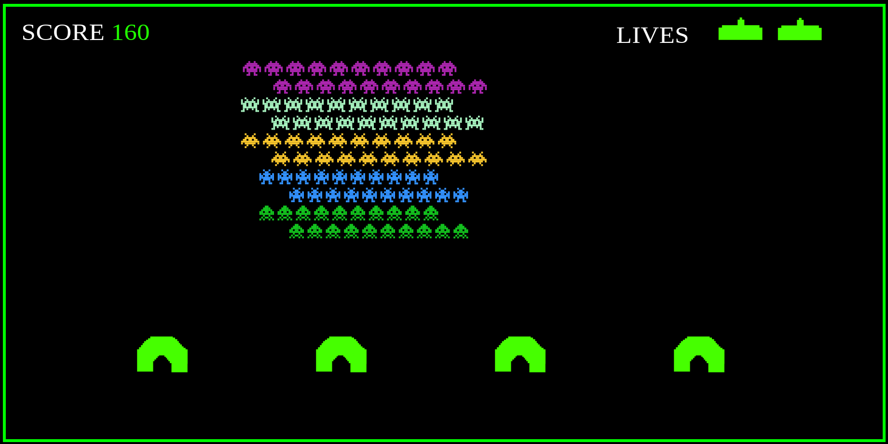
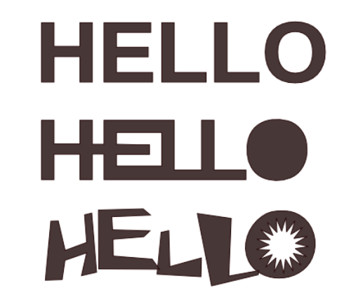

Przygotuj plansze do gry.
Przykład: 
''' cursor: url(plik_z_grafika.svg);
'''
Utworz 4 pliki SVG na podstawie dostarczonej grafiki.
Przekształć tekst na obiekty. Zmodyfikuj kształt według schematu.

Przygotuj napis
Tekst możemy nanosić na płotno na kilka sposobów:
Kliknięcie na płótno umożliwia wprowadzenie tekstu. Możemy edytować go w dowolnej chwili (tryb edycji)
Jeśli aktywujemy narzędzie tekst i najedziemy na obiekt, wówczas pojawi się niebieska ramka.
Wygodniejszym sposobem wprowadzania tekstu jest skorzystaie z okna dialogowego Tekst i czcionka Okno możemy otworzyć skrótem Shift+Ctrl+T, z menu Tekst/Tekst i czcionka lub klikając ikonę T na listwie poleceń.
Aby skorzystać z tego okna obiekt nie musi być w trybie edycji.
Formatując tekst możemy korzystać z listwy kontroli narzędzia tekst lub okna dialogowego Tekst i czcionka, lub odpowiednich skrótów klawiszowych.
Dostęp do pełnej listy funkcji formatowania mamy wyłącznie z poziomu listwy kontroli.
Jeżeli żaden ze znaków nie jest podświetlony, formatowany jest cały tekst. W przeciwnym razie formatujemy jedynie zaznaczony obszar.
Kerning - określa odstęp pomiędzy znakami, które znajdują sie po lewej i prawej stronie kursora lub pomiędzy zaznaczeniem a znakiem po lewej stronie. Kerning działa niezależnie od odstępu między znakami.
Znaki Unicode wprowadzamy na płotno inaczej niż zwykły tekst. Gdy podczas dodawania tekstu użyjemy skrótu Ctrl+U, uruchomimy tryb pracy Unicode, o czym jesteśmy informowani na listwie statusu.
Przykłady:
Innym sposobem na wstawienie znaków specjalnych jest skorzystanie z dokowanego okna Glify. Okno możemy uruchomić wylącznie z menu Tekst/Glify.
Dzięki zastosowaniu elementu <flowRoot>. On właśnie pozwala na określenie obszaru, w którego granicach tekst będzie wyświetlany.
Są dwa sposoby na uzyskanie opisywanego efektu. Pierwszy polega na zaznaczeniu obiektu, który ma wyznaczać grafice tekstu oraz obiektu tekstowego. Użycie skrótu Alt+W, a także Tekst/Wprowadź tekst do kształtu. Operacja ta jest odwracalna, służy do tego skrót Shift+Alt+W lub menu Tekst/Uwolnij tekst
{kind=link}
{kind=link}